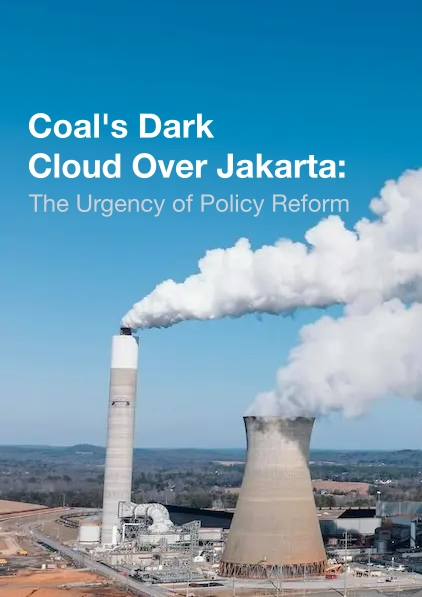

Research Paper
This study examines One Acre Fund's program to digitize its female field force and support rural women farmers through the Learn.Ink platform. Drawing on fieldwork conducted in March 2025 across three regions in Kenya, including one focus group and 16 semi-structured interviews, the research evaluates digital engagement of field officers and women's microenterprise development. While initial adoption was high, sustained engagement was constrained by time poverty, connectivity challenges, data costs, and low digital confidence. Findings suggest digital interventions can drive women's economic empowerment only when aligned with users' lived realities and backed by enabling conditions.
Read more →This paper examines how institutional capacity shapes the effectiveness of fiscal decentralization, using Indonesia's Village Fund policy as a case study. Using a difference-in-differences approach, villages with pre-existing BUMDes before 2015 saw 53% greater income growth than those without, even after controlling for key characteristics. Benefits were strongest in medium-poverty villages and those led by more educated leaders, while impacts were weaker in high-poverty and densely populated areas. The findings suggest successful decentralization hinges on institutional readiness, offering lessons for countries where weak local capacity has constrained policy effectiveness.
Read more →Article

Jakarta's air pollution crisis is driven significantly by coal-fired power plants, yet the Indonesian government has consistently failed to act. With over 190,000 premature deaths annually from air pollution nationally, and 16 coal plants operating within 100 kilometers of Jakarta, the health and economic toll is severe — costing the city nearly $3 billion USD and the country 6.6% of GDP in healthcare expenses. Despite a 2021 court ruling finding the government negligent, no meaningful action followed. With 53 new coal plants under construction, the piece calls for stricter emission standards, tighter air pollution regulations, and higher emission taxes to force cleaner technology adoption and protect millions of Jakarta residents.
Read more →In 2022, the country hit a seven-year low on the Corruption Perception Index, while corruption cases nearly doubled from 2018 to 2022 and state losses reached approximately $3.4 billion USD in that year alone. Average prison sentences remain just over three years, and thousands of convicts receive remission annually. The outdated legal framework, lenient sentencing, and bribery within courts have eroded deterrence. The piece argues for stronger rule of law through higher minimum sentences, increased fines, and removal of remission eligibility — framing it as essential not just for justice, but for attracting foreign investment and realizing Indonesia's economic ambitions by 2045.
Read more →